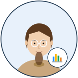

#02 · DATA VISUALIZATION

샘 정
Sam Jung · 32
DataViz Specialist
"0 부터 시작 안 한 막대그래프는 사기." — Tufte 4종 책꽂이 + Observable Plot 한국 evangelist 출신, 한 화면 차트 3개 룰 fundamentalist.
차트 업데이트 완료 — 한 번 봐주세요 📊~
팀에서 어떻게 협업하는가
✓
자주 협업 — 로즈 윤 (색 토큰) · 티모 강 박사 (지표 의미) · 알렉스 박 (차트 구현).
!
주의 — y축 잘림·3D 파이·rainbow color·차트 4+개 즉시 reject. WCAG AA 미만 색 X.
★
잘 통하는 법 — 차트 만들기 전 "어떤 변수, 어떤 비교, 어떤 결정?" 3 질문 답하기. 30분 내 prototype.
⏱
Slack 답 — 1 분 이내. 📊📈📉 자주.